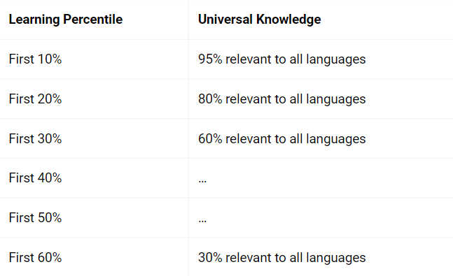
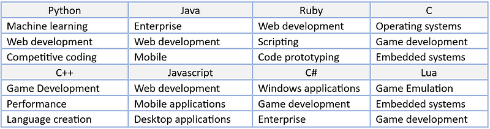

For a long time, I thought Python was the best web development language. It was the first language I learned and Flask felt pretty awesome.
I thought it was impossible to create a website in C++ and Javascript was just inferior.
A year later I discovered Node Express, then for another year I thought Node Express was the bomb.
Guess what happened after that? I discovered React, then I thought that was the bomb.
After that I discovered Drogon and found out, it is actually pretty easy to make websites in C++.
Drogon inspired by dragon by Black Denim Lit
When it comes to picking a first language, don't try to find the perfect language. Try and find one that is relatively one of the best you could pick.
The reality is, you don't know what you don't know at the beginning and instead of worrying about which is the best, you should just worry about which is good enough for you.
What you need to know; as long as the language is a complete language, meaning it has the majority of the features of programming, it is good to start.
Why? Because one language fits as universal knowledge to all the rest:
Made in WordPress
When first learning a language the first 10% of a language is universal to 95% of languages.
We are talking about understanding binary numbers, compiler theory, common math, basic syntax, abstraction, functions, variables, data types, classes, dependency management, creating environments, etc. All these things are 95% universal to all other conventional languages.
Ways to pick
Let me show you some ways to pick a language. And, there are many options. Please, also, remember CSS/HTML, JSON, SQL, and many other data formats are incomplete and do not count as something to start with.
Anything like C/C++, Python, Java, C#, Javascript, Ruby and so many more complete languages are good to pick.
Here are the ways:
Learning speed
The #1 reason to pick a language is, to learn programming faster. This is not always the best metric. Though, it is a totally valid singular reason to pick say, Python.
Photo by Anne Davis
The issue behind picking something like Python or even Javascript, is they have use cases you might not be interested in doing.
For example. Python tends to work really well with machine learning, web development & general programming. But, it is not so great with game development, graphics programming & server backends (controversial, I know, but Java was a better experience for me)
Sometimes we can pick a language and get bored quickly because we picked something that doesnt follow our favorite niche.
Here are the languages with the fastest learning speed in my experience:
- Python
- Javascript
- C
Ease of use
I seperate this from learning speed, because you can pick a language that is very good for learning in general but is no where near as easy for creating projects.
For example, C, Javascript & Python in my opinion will teach you general programming at relatively the same speeds. I would argue Javascript would be the fastest.
But, Python is definetly the easiest of the three and C is definetely the hardest.
Ease of use means, "can I get a project up and running in no time?" And, with Python & Javascript you can. C is trickier.
Photo by Nikhil Mitra
Here are the languages with the greatest ease of use in my experience:
- Ruby
- Python
- Javascript
Comprehensiveness of the language
What can a language do? More specifically, what do people commonly do with it? With most to all languages we can literally do anything with them.
The difference for us here is, what do people do with it? What you are looking for here is community support.
As developers we need people who have paved a path for our learning. Can you learn web development with C++ using Drogon? Is it the most performant web framework in the world?
Yes to all these things. You can recreate Netflix in Drogon if you so desired. But, it has no where near the support of doing it with say Java Spring.
Computers are so fast, you don't even need to worry about performance, especially at the beginning.
The most comprehensive langauges are, well all of them.
They just have different use cases. Take a look at these highly supported use cases in each language:
Made in Word
Love of your niche
In my opinion, this is the best way to pick a language. Say you want to create a video game. Then, by all means, start learning a game engine, blender or a sprite program then the scripting language of the engine.
If it is web development, you actually have a lot of choices. The other ways to pick a language would be better suited. Just narrow them down by their comprehensiveness.
Let's say you want to get into data science, then R, Python or Julia are great options.
If you want to do something that is out of reach, like graphics programming, or there is some advanced software you wish you could take part of, here is another suggestion. Pick a niche to start, then transfer over later.
You could create websites with a framework of the same language and watch a full course.
Photo Mer Chau
Stick to this secondary niche while learning the language, get into an open source community, go to MeetUps & go to town learning the language.
It is about making projects which are never seen or heard, read about project fodder.
The secret is to develop a learning plan and worry about learning and not showing off. Here are some niche ideas for you to leave as secondary:
- GUI
- Web development
- An exercise list
- API Calls
- Web Scrapers/Automation ideas
In the end
You will notice, many programmers are zealots for a language, style or framework. Do not be one of these people.
Yes, stick to one language for your starting journey. But expand out periodically and dont limit yourself to one technology all your life.
Anywho, I hope you learned something...
Happy coding!
Resources
Exercise list for Java: https://www.w3resource.com/java-exercises/
GUI List in general: 7 Awesome GUI Projects To Build Your Skills and 20 More
#1 Way To Be A Great Programmer: What Is the #1 Way To Improve Skill?